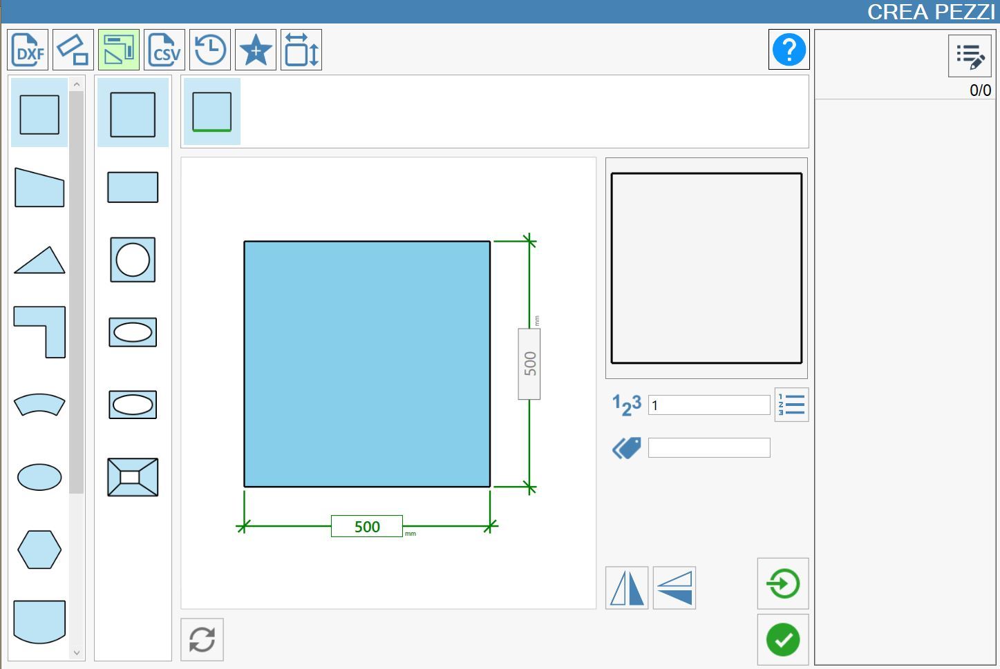
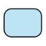
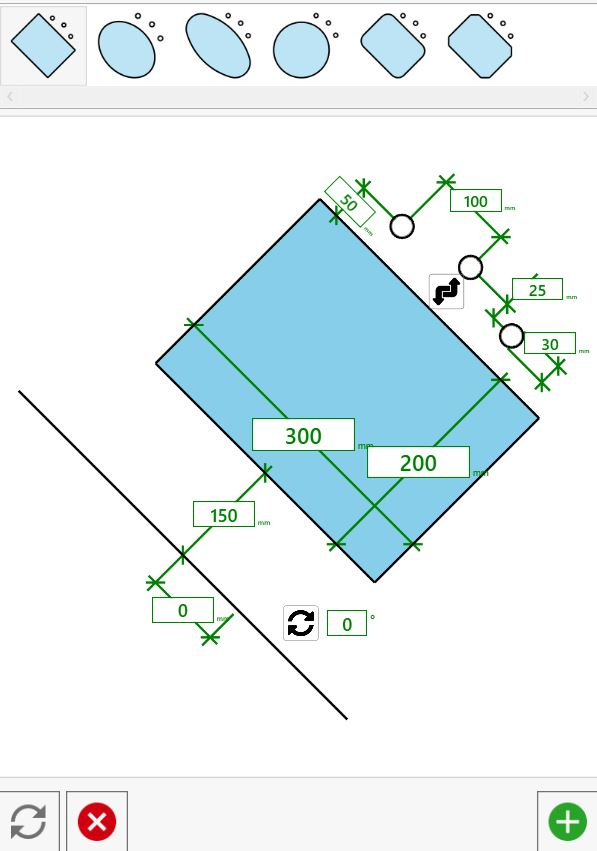
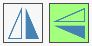

In diesem Bereich können Werkstücke mit parametrischen Formen vorgegebener Gestalt erstellt werden. Zum Zeichnen einer Form müssen lediglich die sie bestimmenden Werte eingegeben werden.

Kategorien parametrischer Formen
Bezogen auf das obige Bild werden in der linken Spalte die Hauptkategorien parametrischer Formen dargestellt.
 | Rechteckige Formen |
 | Vierecke |
 | Dreiecksformen |
 | Küchenarbeitsplatten |
 | Sektorformen |
 | Elliptische Formen |
 | Polygonale Formen |
 | Bäder |
 | Stein- oder Grabformen |
 | Tische |
Sonderformen |
Vorschau und parametrierte Werte
Je nach ausgewählter Kategorie wird in der unmittelbar rechts danebenliegenden Spalte die Auswahl der passenden Form geöffnet.
Ein Bild in der Bildschirmmitte liefert detaillierte Hinweise zu den einzugebenden Abmessungen. Rechts neben dem Referenzbild wird eine Vorschau der gezeichneten Form angezeigt, die nach jeder Änderung der die Form bestimmenden Werte in Echtzeit aktualisiert wird.
Wie in den vorherigen Abschnitten kann nach Abschluss der Eingabe der Maße die Kennzeichnung (oder das Etikett), die auf dem Werkstück im Arbeitsbereich angezeigt wird, die Anzahl der Werkstückkopien eingegeben und festgelegt werden, ob der Einzelimport verwendet werden soll.
Im folgenden Bild ist ein Beispiel für die Erstellung einer Küchenarbeitsplatte zu sehen.

Innenaussparungen erstellen
Um Innenaussparungen zu erstellen, auf eines der inneren Rechtecke im mittleren Bild drücken. Es öffnet sich das im folgenden Bild dargestellte Fenster, in dem die Aussparung nach Bedarf geändert und anschließend in das Originalbild eingefügt werden kann.

Zusätzliche Einstellungen
Zusätzliche Parameter
Für die Erstellung rechteckiger Werkstücke werden folgende Daten benötigt:
 | Anzahl der Werkstücke |
 | Kennzeichnung |
Zusätzliche Schaltflächen
 | Einzelimport |
 | Mirror |
 | Zurücksetzen |
Leiste für nicht rechtwinklige Werkstücke
Einige Werkstücke können mit nicht rechtwinkligen Winkeln (also ungleich 90 Grad) erstellt werden.
Dazu wird eine Leiste über dem mittleren Bild verwendet, die alle Änderungsversionen dieses Bilds enthält. Änderbare Parameter sind grün dargestellt.

Mirror
Über die beiden entsprechenden Schaltflächen kann das am Bildschirm angezeigte Ergebnis jeweils entlang der vertikalen bzw. horizontalen Achse gespiegelt werden. Mit dieser Funktion lässt sich die Darstellung an die betrieblichen Anforderungen oder die aktuelle Bearbeitungsart anpassen.
Nachfolgend werden einige Beispiele für horizontale und vertikale Spiegelungen gezeigt:
Nur horizontale Spiegelung | Nur vertikale Spiegelung | Horizontale und vertikale Spiegelung |
 |  |  |
 |  |  |